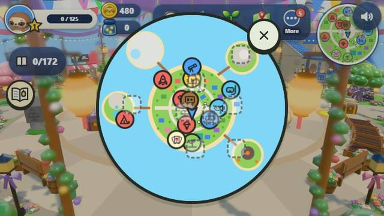

No-reading games for 6 year olds
A guide for parents · October 2026
Most games for young children still lean on words: a menu to read, a hint to follow, a button that says “Continue”. A child who is just learning to read gets stuck and calls for help. Sloth Jam was made so a 6 year old can play the whole game on their own, before they can read.

What makes a game work without reading
- Pictures, not words. Every place, game and prize is shown as a picture. The island map has no labels to read.
- Numbers a child can count. Scores and stars are numbers and icons, nothing more.
- Few controls. One stick and one button play every game, on a keyboard, a touch screen or a controller.
- Short rounds. Each game lasts one minute, so the rules are shown, not explained: a child sees what to do and does it.
- Words only for grown-ups. The only screens with text are the grown-up ones, behind a parent gate.
What a 6 year old can play
Sloth Jam has 59 one-minute party games on a cozy island. A few that young children pick up at once:
- Fruit Fall: catch the good fruit in a basket, leave the frowning rotten ones.
- Pop the Moles: nine holes and a foam mallet. Watch for the golden mole.
- Lantern Parade: nobody loses this one. Everyone lights the lanterns together.
- Coconut Dodge: sidestep the big coconuts, hop over the small ones.
The computer players play like a kind sibling. In our tests a new player wins about one round in four, so a young child wins often enough to keep going, without every win being handed to them.
More than the party games
Between games there is a whole island to wander: ten animal friends who wave and answer emotes, fireflies to catch, a trampoline and a seesaw, a reef to dive, and outfits to try on. All of it works with pictures.
How to start
Sloth Jam is free to play in a web browser on a computer, tablet, phone or Chromebook, with nothing to install. It is in early access, so it is still being built. Made for ages 6 and up.